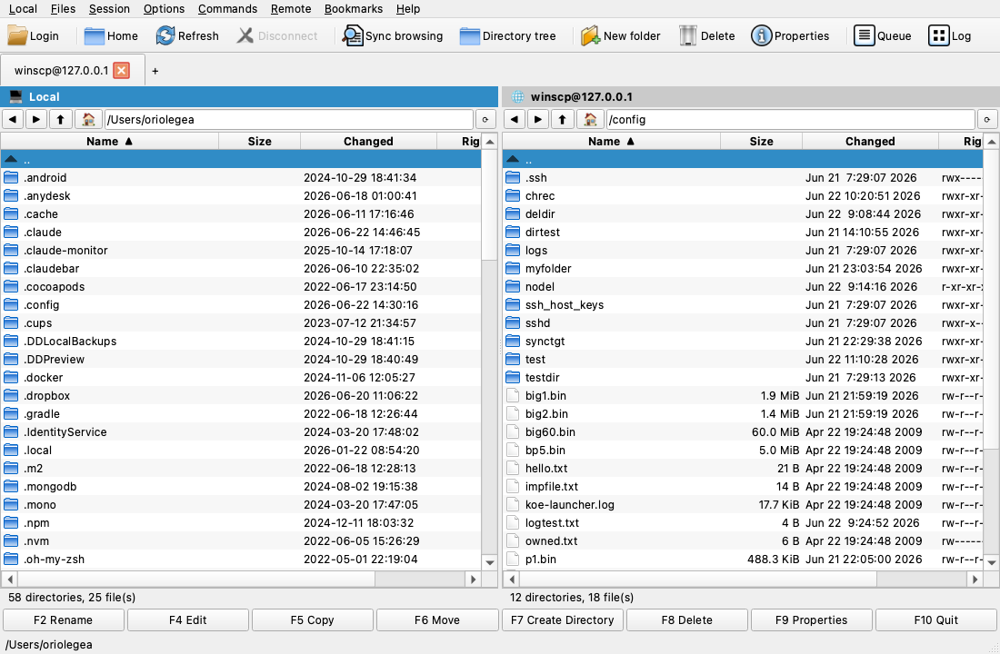

A native macOS & Linux port of WinSCP.
The dual-pane file manager people have loved on Windows for 20 years — SFTP, FTP, SCP, WebDAV and S3 — now running natively on the Mac (Linux next). Free and open source.
Works with SFTP · SCP · FTP · WebDAV · Amazon S3 (＋TLS)

A faithful rebuild of the WinSCP Commander, running the same protocol engine natively.
Two panels, session tabs, a directory tree and synchronized browsing — the layout you know.
SFTP, SCP, FTP, WebDAV and S3, with TLS. Connect, browse, transfer and manage files.
Open a remote file in any editor; FreeSCP watches it and re-uploads automatically when you save.
Background transfers with a live queue, speed and parallel connections.
Between panels and to/from Finder. Bookmarks, masks, overwrite prompts, recursive chmod.
Public-key auth (your OpenSSH keys work), host-key verification, and a notarized, signed app.
WinSCP has been a fantastic, free tool on Windows for many years — but it never existed on macOS or Linux, and nothing else quite replaces it. FreeSCP closes that gap: it runs WinSCP's own protocol engine, recompiled natively, behind a Qt rebuild of its interface. So transfers behave exactly like WinSCP, on your Mac.
It's free software under the GPLv3, a project started by Oriol Egea, made possible by leaning on AI for the heavy lifting of the port.